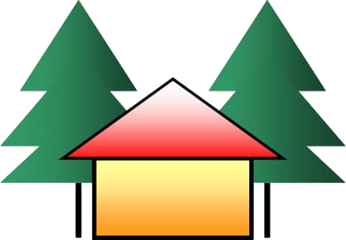

Carregando…

Recanto dos Velhinhos Francisco Gonçalves Barbosa
Fundado em 07/01/1983. Registrado no Conselho Nacional de Assistência Social sob o nº CCEAS0077/2003, em 21/08/2003. Utilidade Pública Federal: Decreto de 03/04/2000, Utilidade Pública Estadual: Lei n.º 3.961, de 17/09/2002, Utilidade Pública Municipal: Lei n.º 45, de 14/05/1998. Registrado no Cartório do 1.º Ofício da Comarca de Piraí, Registro de Pessoas Jurídicas, Livro A, fls. 37, sob o n.º 16 em 13/04/1983, Rerratificação de Estatuto no Livro “A-1”, às fls. 072/074, nº de ordem AV.02-016 em 30/12/2003 - CNPJ: 28.056.695/0001-42
SEDE: Rua Francisco Ribeiro de Abreu, 102 – Posto Zootécnico – Pinheiral – RJ – CEP 27198-360 TEL: (24) 3016-4023
Relatório de doações
Este relatório lista as doações feitas por Pix e declaradas pelo doador no site do Recanto (botão “Já fiz o Pix”), espontâneas e associativas. Uma doação só é confirmada depois que a equipe confere a entrada no extrato bancário. Não inclui o que é pago na sede, em dinheiro, por depósito ou transferência, nem doações de itens: não representa a arrecadação total da instituição.
Resumo
| Tipo | Quantidade | Total |
|---|
Totais por mês
| Mês | Espontânea | Associativa | Total |
|---|
Doações
| Nº | Data e hora | Tipo | Doador | Situação | Valor |
|---|---|---|---|---|---|
| Total | |||||
Presidente
Emitido pelo SAGE em . Data e hora das doações: momento do clique em “Já fiz o Pix”, horário de Brasília.